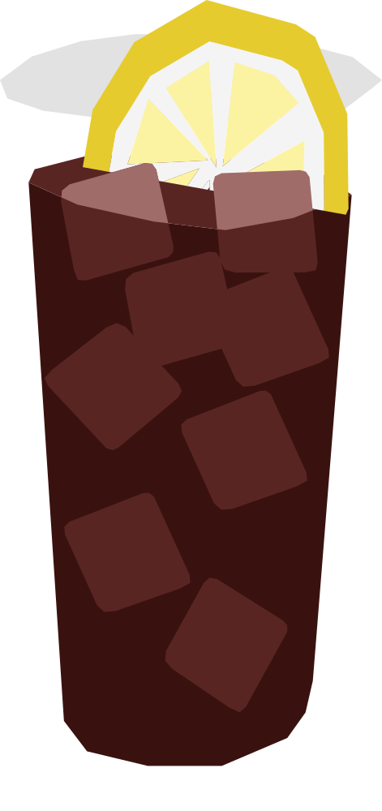

¿Y los italianos qué?
El fernet llegó con inmigrantes italianos en el siglo XIX como digestivo. La mezcla con Coca-Cola se popularizó en Córdoba entre los años 80 y 90, y hoy es la bebida social por excelencia de la juventud argentina, presente en casi cualquier reunión.
RECETA
- 50 ml Fernet
- 150 ml refresco de cola
- Hielo en cubos
- 1 Limón amarillo
- Llena un vaso con hielo.
- Agrega el Fernet y completa con el refresco de cola.
- Mezcla suavemente para conservar las burbujas.
- Decorar con una rebanada de limón amarillo
Vaso: Old fashioned / vaso bajo o highball (vaso alto)